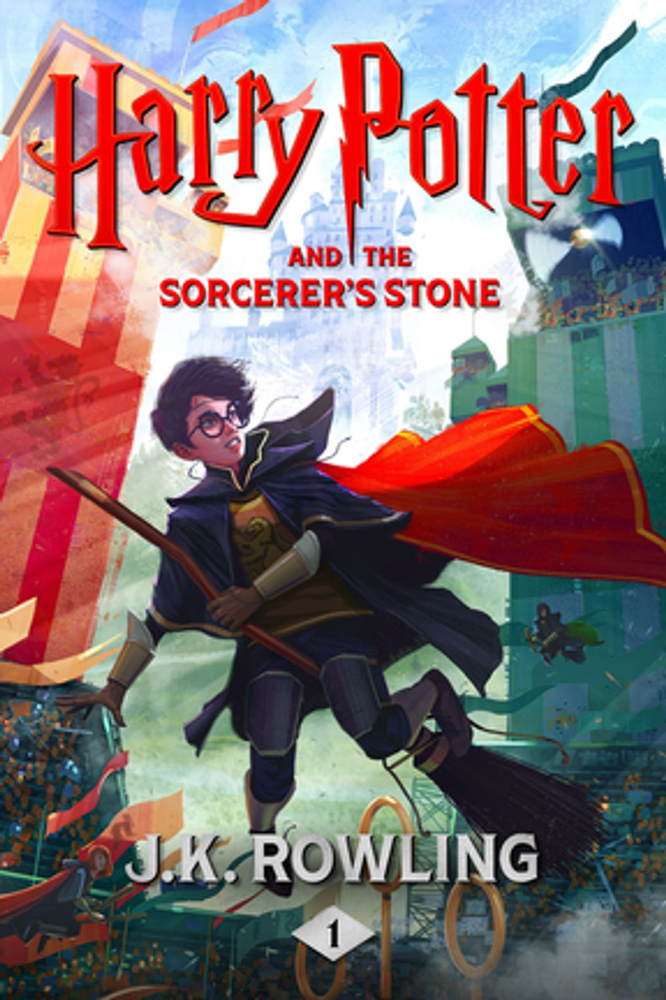
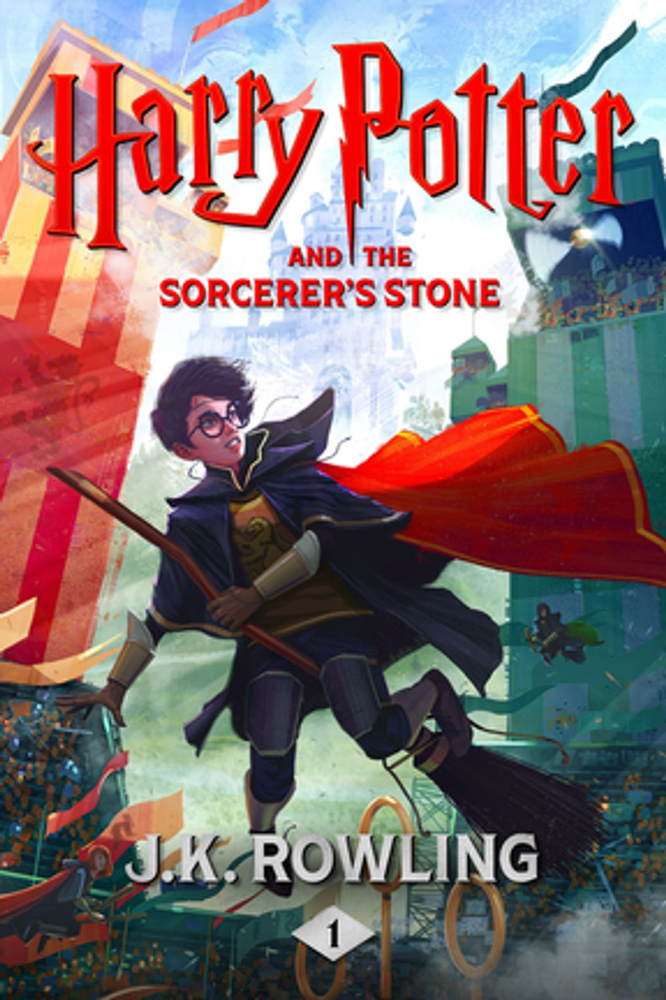

MUST TRY BOOKS
 



The Hobbit by J.R.R. Tolkien
Description:This classic fantasy novel follows Bilbo Baggins, a humble hobbit, as he embarks on a dangerous and thrilling journey with a group of dwarves to reclaim their homeland from the fearsome dragon Smaug. Along the way, Bilbo discovers courage, friendship, and a magical artifact that will change the fate of Middle-earth.
"Click here to listen to the audiobook."Harry Potter and the Sorcerer’s Stone by J.K. Rowling
Description: The first book in the beloved Harry Potter series introduces readers to a young wizard, Harry, as he discovers his magical heritage and attends Hogwarts School of Witchcraft and Wizardry. With unforgettable characters, thrilling adventures, and mysteries to solve, this story is a perfect gateway into the world of fantasy.
"Listen to the Audiobook"A Song of Ice and Fire: A Game of Thrones by George R.R. Martin
Description: This epic fantasy novel is set in the Seven Kingdoms of Westeros, where noble families vie for power, loyalty, and survival. Featuring a vast array of characters, intricate plots, and unexpected twists, the story weaves together political intrigue, battles, and a world filled with dragons, magic, and betrayal.
"Listen to the Audiobook"The Name of the Wind by Patrick Rothfuss
Description: This book introduces Kvothe, a gifted young man with a tragic past, as he rises to become a legendary figure in the world of magic and adventure. Told through Kvothe’s own voice, the novel delves into themes of love, loss, and the pursuit of knowledge in a richly detailed fantasy world.
"Listen to the Audiobook"